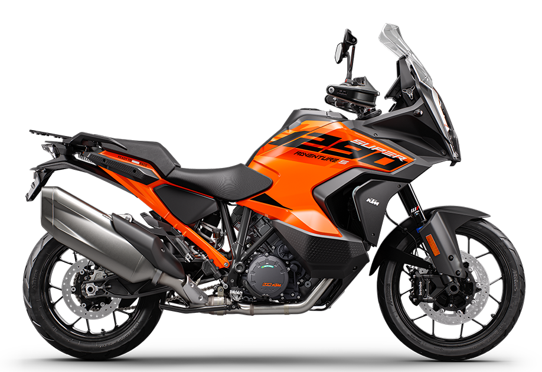

KTM 1290 ADVENTURE S

Általános adatok:
- Évjárat: 2022
- Kivitel: Túra-sport
Jármű adatok:
Motor adatok:
- Üzemanyag: Benzin
- Hengerűrtartalom: 1 301 ccm
- Teljesítmény: 128 kW, 174 LE
- Munkaütem: 4
- Hengerek száma: 2
- Henger-elrendezés: V
- Szelepek száma: 4/henger
- Keverékképzés: Injector
- Hűtés: Víz
- Hajtás: Lánc
- Sebességváltó: Szekvenciális (6 fokozatú)
Műszaki:
- Fém fékcső
- Fordulatszámmérő
- Immobiliser
- Önindító
- Fedélzeti computer
- Tárcsafék hátul
- Elektromos futómű állítás
- Tempomat
- Katalizátor
- Dupla tárcsafék elöl
Vissza